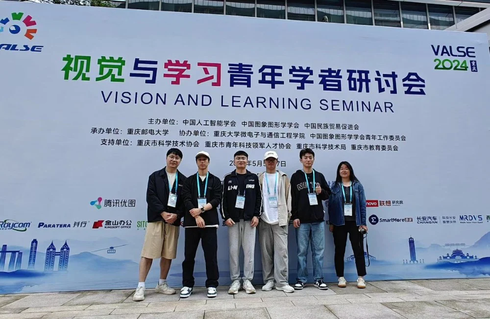

VALSE2024于2024年5月5日至7日举办，IMED宁波团队李宏硕、胡肖扬、张元迪、谢起航、张明恩一行五人参加会议。会议第一日议程主要围绕大会主旨报告：大模型时代的机遇与挑战、以深度学习框架为牵引促进自主AI生态发展、从洞穴的影子到只能的光辉——连接和交互方式的改变塑造未来生活三个方面引出大会的主题。之后分别由各领域专家依次介绍2023-2024年度CV与ML领域重要学术进展，内容主要围绕大模型的应用、具身智能、多模态技术、图像生成与视频生成、三维重建等技术展开，大会第二日与第三日主要是围绕上述内容由领域专家展开更为细致的讲解，同时设立展板交流平台，帮助学者之间互相交流学习。

于我们而言，会议整体规划如下：会议第一天日程的大部分会议可以作为一种开拓视野，与AI潮流接轨的科普讲堂，所以我们第一日会议的重点主要放在寻找自身研究课题与热点技术如何接轨的大方向上，同时对于其中热点话题或者热点技术进行了详细讨论，例如多模态视觉融合方法通过顿悟的形式打破性能极限；视觉通用人工智能中传统方法在现代技术手段绽放的新形式；大模型未来的研究方向可能会趋近于领域专才大模型等。考虑到未来专才大模型的趋势以及手中含有的大量角膜相关数据，为此会议第二日，我们选择重点听取视觉大模型的高效迁移与大模型赋能智慧医疗两个Workshop。会议中我们在王国泰老师为主的报告中学习了如何在较少的训练资源条件下利用自监督等方式训练大模型的相关技术研究。 也学习了高鹏等研究员如何利用现有的视觉大模型实现模型高效迁移的思路。其他知识点，此处不再赘述。下午的会议报告与研究课题相差较大，为此我们选择放弃会议报告转而与学术展览中的poster们进行交流。与poster们的交流使我碰撞出了更多的思维火花，明确了我们在模型中的改进点。第三日的会议内容，我们听取了脑启发的视觉与学习以及异构联邦学习两个workshop，并做了相应的记录。而下午的会议我们主要以poster交流为主，听讲座为辅。与poster的交流过程是愉悦的，结识志同道合的新朋友是令人振奋的，这次讲座于我们而言意义重大，这是一次科研思路的纠正也是一次研究技术的洗牌与重组。感谢IMED课题组以及赵老师提供的机会。
编辑：李宏硕
时间：2024/5/17